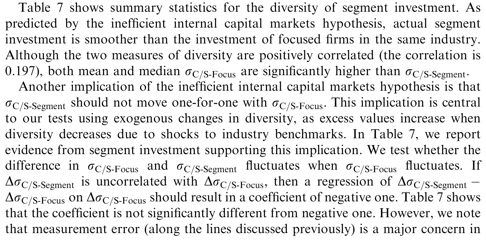
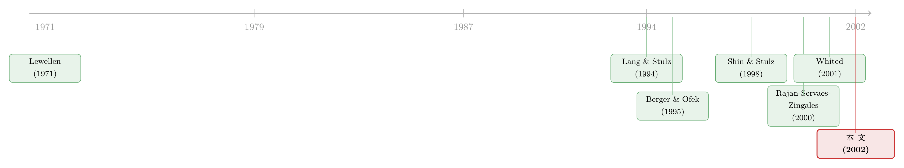

多元化到底毁不毁价值？——用「行业冲击」把内生性逼到墙角
本文读的是 Lamont & Polk (2002, Journal of Financial Economics)：多元化公司估值偏低，到底是「多元化本身毁了价值」，还是「本来就差的公司才去搞多元化」？作者用一个巧妙的办法把这两件事拆开——只看那些由行业投资环境波动、而非公司自己行动所引起的多样性变化。结论是：哪怕是这种完全外生的多样性上升，也会拉低公司价值。一个标准差的多样性增加，对应约 1.1% 的超额价值下跌。多元化，真的会毁价值。
1 一个老问题，和一个绕不过去的「鸡生蛋」
做公司金融的人，大概没有谁没听过「多元化折价 (diversification discount)」这件事。Berger and Ofek (1995)、Lang and Stulz (1994)、Servaes (1996) 一篇接一篇地告诉我们：一家横跨多个行业的公司，它的市值往往低于「把它拆成几家专注型公司、再按市值加总」所应有的价值。差距有多大？常见的估计是 10%–15%。
于是几乎所有人都顺理成章地下了一个结论：多元化是坏事，它销毁了股东价值。
但只要你稍微停下来想一想，就会发现这里藏着一个绕不过去的「鸡生蛋」难题。多元化折价这件事，至少有两种讲法。
第一种：多元化本身就是病灶。公司一旦摊大饼，内部资本市场就开始「乱来」——把钱从好业务抽出来，硬塞给差业务。这就是著名的「无效内部资本市场假说 (inefficient internal capital markets hypothesis)」。
第二种：多元化和低估值之间根本没有因果关系，它们只是同一个东西的两张脸。也许是本来就经营不善、估值偏低的公司，才更倾向于去并购、去多元化。那么我们观察到的「折价」，不过是这些差公司自我选择的结果——是它们的「坏」导致了多元化，而不是多元化导致了它们的「坏」。
这两种解释，在数据里长得一模一样：多元化程度高 ↔ 价值低。可它们的政策含义南辕北辙。如果是第一种，那么拆分、重新聚焦就能创造价值；如果是第二种，拆分只是把一群烂公司换了个包装，价值不会凭空冒出来。
这正是公司金融里最折磨人的内生性 (endogeneity)：公司是自己选择要不要多元化的。只要选择是内生的，你看到的任何相关性都没法直接读成因果。
那么，怎么办？
2 真正关键的一步：把「多样性」拆成外生的和内生的
要从相关走向因果，标准答案是找一个外生工具——一个能撬动「多元化程度」、却又不直接被公司经营状况污染的变量。
Lamont 和 Polk 的聪明之处，就在于他们找到了这个工具，而且就藏在数据本身里。
先说他们怎么度量「多元化程度」。沿用文献的思路，他们用「多样性 (diversity)」来刻画：一家公司各个分部 (segment) 在某个特征上的组内离散程度。本文盯住的核心特征是投资机会——具体地，对每个分部，取它所在二位 SIC 行业里那些专注型公司当年的中位「投资/资本」比率，记为 \(I_{IND}\)；然后把一家多元化公司各分部的 \(I_{IND}\) 算一个组内标准差，这就是它当年的多样性 \(s_t\)。
直觉很简单：如果一家公司同时拥有一个「行业投资机会很差」的分部和一个「行业投资机会很好」的分部，那么它的 \(s_t\) 就高——它是一家「高多样性」的公司，也就最容易掉进无效内部资本市场的陷阱（把钱从好分部挪到差分部）。
接着，一个自然的问题是：\(s_t\) 会变。它为什么变？
它的变化 \(\Delta s_t\) 来自两个完全不同的源头。一是公司自己动了手脚——并购了新业务、剥离了老业务、或者把某块资产重新归类，导致分部结构 (structure) 变了。二是公司什么都没做，但它所处行业的投资环境变了——比如航空业的投资机会突然改善，于是它和电子业之间的差距缩小了，\(s_t\) 自动下降。
这第二种变化，就是本文的命门。作者把它从总变化里干净地剥出来：
这里的识别假设 (identifying assumption) 一句话就能说清：对一家单个的多元化公司而言，整个行业的投资环境波动是外生的——你一家公司改变不了你所在行业里几百家专注型公司的平均投资行为。
于是 \(\Delta s_X\) 就成了一个干净的外生变量：它捕捉的是「公司一动不动、纯粹被行业潮水推着走」时，多样性会怎么变。把它和「超额价值 (excess value)」的变化 \(\Delta q - \Delta \bar q\) 放在一起回归，看到的就不再是相关，而是因果。
超额价值的定义沿用 Berger and Ofek (1995)：先算出公司的「想象价值」\(\overline{Q}\)（用各分部所在行业的中位 Q 加权得到），再取对数比 \(q - \bar q = \ln(Q / \overline{Q})\)。它衡量的是「真实市值」相对「把各块业务当专注公司加总」的折溢价。
3 一个例子：Northrop Grumman 的 1996 与 1997
抽象的公式不如一个具体的例子。论文一开篇用 Northrop Grumman 把整套逻辑演示了一遍，值得复述。
1996 年，这家公司有两个分部：一个航空分部（行业投资率 17.6%），一个电子分部（行业投资率 33.2%）。两个行业的投资机会差得远，所以它的多样性 \(s = 0.110\) 不低，相应地，它当年背着 29% 的折价。
到了 1997 年，两件事同时发生了。
第一件是外生的：航空业的投资机会大幅改善（投资率从 17.6% 升到 25.0%），于是航空和电子两个行业变得更接近了。假如 Northrop Grumman 这一年什么结构都没动，光这一个行业层面的变化，就会把它的多样性从 11% 压到 7.2%。所以——
$$\Delta s_X = 0.072 - 0.110 = -0.038$$
这就是 −3.8% 的外生多样性下降。
第二件是内生的：公司新增了一个「信息技术与服务」分部（部分来自一桩并购、部分来自把电子分部的资产重新归类）。这个新分部行业投资率高达 62.9%，一下把多样性顶到了 19.6%。于是——
$$\Delta s_N = \Delta s - \Delta s_X = (0.196 - 0.110) - (-0.038) = 0.086 + 0.038 = 0.124$$
+12.4% 的内生上升。
你看，这一年里同一家公司的多样性，被两股方向相反的力量同时撕扯：行业潮水想把它拉低 3.8%，公司自己的并购又把它推高 12.4%。Lamont 和 Polk 要的，就是把前者那 −3.8% 单独拎出来。
4 数据与识别细节
把例子放大到全样本：作者用的是 Compustat 现有库与研究库 (Current and Research) 里 1979–1997 报告分部数据的公司。沿用 Berger and Ofek (1995) 的筛选——剔除金融业分部、总销售额低于 $20 million 的公司、以及分部与公司数据对不上的样本，并要求公司有完整的股权、债务、投资、资本存量与销售增长信息。
最终样本：11,974 个公司-年观测，来自 1,987 家不同的多元化公司，区间 1980–1997，平均每家 2.7 个分部。
有一个统计量值得单独点出来：在多样性的总变化里，外生变化贡献了约 80%——外生变化的标准差是 0.040，总变化的标准差是 0.045。换句话说，多样性的逐年起伏，绝大部分根本不是公司自己折腾出来的，而是行业潮水冲出来的。这恰恰说明 \(\Delta s_X\) 不是一个边边角角的小变量，它就是多样性变化的主体。
回归是简单的混合 OLS，标准误按 Rogers (1993) 的做法做了年度聚类 (clustered by year) 并对异方差稳健——这是因为同一年里不同公司的残差会因为共同的行业冲击而相关。
5 主要结果：哪怕完全外生，多元化也毁价值
来看核心回归（被解释变量是超额价值的变化 \(\Delta q - \Delta \bar q\)）。
第 (1) 列用总的多样性变化 \(\Delta s\)，系数为负且显著，约为 −0.25。它的含义是：多样性每上升一个标准差（0.045），超额价值就下跌约 1.1%。
这个系数还能回答一个更大的问题：投资多样性能解释多少「平均折价」？ 一家专注型公司的 \(s\) 机械地等于零；而样本里 \(s\) 的均值是 0.049。于是平均而言，多样性带来的折价约为 \(-0.25 \times 0.049 \approx 1.2\%\)。而样本里的平均折价是 2.8%。也就是说——光是投资多样性这一项，就能解释平均折价的 40% 以上。
但第 (1) 列还是相关，不是因果。真正的杀招在下一列。
第 (2) 列换成外生变化 \(\Delta s_X\)：系数依然为负、依然显著。这是全文的主结果。它说的是：哪怕多样性的上升完全来自行业潮水、和公司自己的任何选择都无关，价值照样下跌。这就不可能用「差公司自我选择去多元化」来解释了——因为这部分多样性变化根本不是公司选的。于是结论只剩一个：多元化本身，有因果意义地，毁了价值。这支持无效内部资本市场假说。
第 (3) 列把外生和内生变化一起放进去：两个系数都为负。内生那一项也显著，说明「公司在经营变差时主动去多元化」这条自选择渠道确实存在。但作者很诚实地提醒：内生系数不能被读成「多元化毁价值」的证据——它可能反映价值销毁型的多元化，也可能是公司对某个观测不到的负面冲击的理性回应，还可能是 Graham et al. (1999) 说的那种「剥离高价值、并购低价值」的统计假象。能下因果断言的，只有外生那一列。
第 (4) 列再加上 t−1 年的超额价值水平、t−1 年的多样性水平，以及年度和公司双向固定效应（18 个年度虚拟变量、1,987 个公司虚拟变量）。加这些是为了堵住「水平回归的均值回复」之类的后门。结论稳健。
那么——会不会是测量误差 (measurement error) 在捣鬼？这是研究多样性与超额价值关系时最大的隐忧，Chevalier (1999)、Whited (2001) 都点过这个名。问题出在：超额价值的分母 \(\overline{Q}\) 用的是各行业的 Q，而度量投资机会多样性最自然的方式恰恰也是用各行业 Q 的离散度——同一个 \(Q_{IND}\) 既进了被解释变量、又进了解释变量，会「硬连线 (hardwiring)」出一个虚假相关。
Lamont 和 Polk 的处理很干净：度量投资多样性时，用的不是行业 Q 的离散度，而是行业投资的离散度 (\(I_{IND}\))。行业投资和行业投资机会相关，但和「行业 Q 的测量误差」关系就弱多了。生成多样性的变量与计算超额价值的变量不是同一个，硬连线问题自然消解。作者还量化了测量误差的潜在影响，发现在基准设定下它非常小。
这是一个值得反复体会的设计巧思：用「投资」而不是「Q」来度量投资机会的多样性，一举甩掉了机械相关的嫌疑。（关于测量误差和内生性如何能一起推翻一个流行结论，可参见《拆分真能让公司投得更聪明吗？》。）
6 不止投资：现金流多样性也毁价值
如果故事到这里就结束，那它只证明了「投资机会的多样性」是坏的。作者又往前追了一步：换成其它行业特征的多样性会怎样？
他们检验了行业杠杆、销售增长、现金流这三种多样性。结果很有意思：
- 这些其它变量的多样性变化，并不能吞掉投资多样性的效应——投资多样性在加入它们后依然显著为负。从这个意义上说，无效内部资本市场假说挺住了。
- 在这些变量里，现金流多样性 (cash flow diversity) 也显著地、负向地拖累价值；而杠杆多样性、销售增长多样性则没有。
- 而且投资多样性和现金流多样性互不吞并——它们各自都带着独立的负面信息。
现金流多样性也毁价值，这一点和「钱在公司内部被错配」的图景高度吻合：现金流分布越不均，越有动力把好分部的钱挪去补差分部。
最后，作者还直接检验了那个机制本身：把多元化公司的分部投资，和同行业专注型公司的投资比一比。结果是——多元化公司确实在「熨平」各分部之间的投资，相比专注型同行，它们投得更平均、更「社会主义」。这条具体证据虽然不能独立证明因果，但它和「资本在公司内部被无效配置」的假说严丝合缝。论文用一张表汇报了分部投资多样性的描述统计，见表 7。

Table 7: shows summary statistics for the diversity of segment investment. As
（关于内部资本市场如何「熨平」投资、又如何在分拆后回归效率，可对照《拆开来看，钱才流到对的地方》；关于把「不一样」的分部分开后折价如何消失，可参见《拆开，是为了把「不一样」分开》。）
7 文献脉络
把这篇论文放回它所在的那条河流，会看得更清楚。
最早，多元化在理论上甚至是好事。Lewellen (1971) 论证：现金流多元化能降低破产概率、从而扩大债务税盾，是一种纯粹的财务理性。
转折发生在九十年代。Lang and Stulz (1994) 用 Tobin's Q 系统记录了多元化公司估值偏低；Berger and Ofek (1995) 把「多元化折价」量化并钉死，还发现多元化公司在差行业里过度投资；Servaes (1996) 在更长的历史里印证了同一现象。「折价」由此成为一个公认的实证事实。
但事实之上，机制之争才刚开始。一条线索指向内部资本市场的「黑暗面」：Lamont (1997) 发现油价下跌时石油公司会砍掉非石油分部的投资；Shin and Stulz (1998) 发现一个分部的现金流会影响另一个分部的投资；Scharfstein and Stein (2000) 给出「部门内部寻租、资本被错配」的理论，Rajan, Servaes and Zingales (2000) 则建模并实证了「资源流向无效部门」，并发现公司价值与投资机会多样性负相关。本文要检验的，正是 Rajan et al. (2000) 这最后一个发现——而且要把它从相关升级成因果。
与此同时，另一条线索在敲警钟：Chevalier (1999) 和 Whited (2001) 指出，很多支持无效内部资本市场的证据，可能只是测量误差和内生性的产物。

Lamont 和 Polk (2002) 正站在这两条线索的交汇处：他们既要回应 Rajan et al. 的机制，又要正面迎战 Chevalier-Whited 的批评。用「行业冲击」做外生工具、用「投资」而非「Q」绕开硬连线——这两手，恰好同时回答了内生性和测量误差两个质疑。作者自己的另一篇 Lamont and Polk (2001) 则补充说，折价里有相当一部分其实来自预期收益（折现率）的差异，而非现金流——这给本文的价值销毁留了一个「现金流 vs 折现率」的开放尾巴。
8 评论与延伸（Q&A + 研究方向）
(a) 几个可能的疑问
Q：用「行业投资」做工具，真的外生吗？会不会行业投资本身就被这家大公司影响了？
对一家单个多元化公司而言，它一般无力左右整个二位 SIC 行业里几百家专注型公司的平均投资，这个外生性假设相当可信。隐患在于：如果存在跨行业的共同冲击（比如宏观周期同时推动多个行业的投资和估值），\(\Delta s_X\) 就可能与价值有非因果的关联。作者用年度固定效应和年度聚类标准误来吸收这类共同冲击，缓解了这个担忧，但无法完全排除「行业特定」的混杂。
Q：这和直接用「行业 Q 的多样性」有什么本质区别？
区别就是全文成立与否的关键。行业 Q 既进了被解释变量 \(\overline{Q}\)、又会进解释变量，二者共用同一份测量误差，会机械地造出负相关。改用「行业投资 \(I_{IND}\)」度量多样性后，生成解释变量的数据和生成被解释变量的数据不再是同一个，硬连线被切断。这是方法论上最漂亮的一招。
Q：外生系数显著为负，能否就说「拆分一定创造价值」？
不能直接外推。本文证明的是「外生的多样性上升会降低价值」，这与「主动拆分能提升价值」逻辑上相容但不等价——拆分是公司的内生选择，会牵扯到本文刻意剔除的那些自选择因素。要回答拆分的价值，还得看 refocusing 类事件研究（Comment and Jarrell, 1995；John and Ofek, 1995）。
Q：内生变化 \(\Delta s_N\) 的系数也显著为负，这说明什么？
它说明「自选择渠道」真实存在——经营变差的公司确实更可能去多元化。但这个系数无法被读成因果：它可能是价值销毁型并购，也可能是公司对未观测负面冲击的理性反应，还可能是「剥离高价值、并购低价值」造成的统计假象。能下因果结论的只有外生那一列。
Q：现金流多样性也毁价值，会不会只是因为现金流和投资高度相关、其实是同一回事？
作者专门检验了这一点：投资多样性和现金流多样性互不吞并，各自在控制对方后仍显著为负。这说明两者携带的是部分独立的信息，而不是同一个变量的两个名字。
Q：折价到底是现金流被毁了，还是折现率（预期收益）变了？
本文没有区分这两个价值销毁的来源。Lamont and Polk (2001) 指出，多元化折价的横截面方差里有相当大一块来自预期收益差异——高预期收益的公司估值低。所以「多元化毁了多少现金流、又改变了多少风险/折现率」，本文留作开放问题。
(b) 几个可能的研究问题与提案
1. 把「行业冲击工具」搬到公司债与信用利差上
【经济故事】如果外生的投资多样性上升会通过无效内部资本市场销毁股东价值，那它对债权人意味着什么？一方面资本错配增加违约风险（利差走阔），另一方面现金流多元化降低破产概率（Lewellen 渠道，利差收窄）。两股力量谁占上风，是一个干净的实证问题。 【可行性】中。需要把 Compustat 分部数据与 TRACE/Mergent 债券数据匹配，用本文同样的 \(\Delta s_X\) 作外生冲击，被解释变量换成信用利差变化。识别沿用本文逻辑，难点在分部—发行人层面的匹配与利差的流动性噪声剥离。
2. 外资持有人是否「惩罚」多元化？
【经济故事】外国机构投资者通常被认为更看重透明度、更厌恶复杂的集团结构。那么当一家公司因行业冲击而被动变得更「多样」时，外资的持仓反应是否比本土投资者更剧烈？这能把「多元化折价」与「公司治理偏好」联系起来。 【可行性】中。需要 FactSet/13F 或跨国持股数据，结合本文的外生多样性冲击，做持股变化对 \(\Delta s_X\) 的回归。识别上仍可借用行业冲击的外生性。（与《外资真是「蝗虫」吗？》的问题意识相通。）
3. 多样性冲击与分部层面的流动性/资产可售性
【经济故事】无效内部资本市场的另一面是「想卖的卖不掉」。当外生冲击抬高了多样性，公司更想剥离某个分部，但分部资产的可售性（行业并购活跃度）决定了它能否真的卸掉包袱。多样性 × 资产流动性的交互项，可能预测随后的剥离与价值修复。 【可行性】中高。分部行业的并购活跃度可由 SDC 构造，剥离事件可观测，本文方法直接可用。
4. 把「投资熨平」做成连续时间的因果链
【经济故事】本文展示了多元化公司相对专注同行投得更平均，但这是横截面对比。能否用外生的行业冲击，追踪「冲击 → 内部资本重配 → 价值变化」的动态时序？这会把机制从「相关一致」升级为「时序因果」。 【可行性】中。需要分部资本支出的面板（本文 4.4 节已用过），以分布滞后回归刻画冲击后的投资再配置路径。难点是分部数据的报告噪声。
5. 现金流多样性 vs 折现率：拆开价值销毁的来源
【经济故事】承接 Lamont and Polk (2001)，把外生多样性冲击对价值的总效应，分解为「现金流渠道」与「折现率/预期收益渠道」。如果外生多样性主要抬高了风险溢价而非压低了现金流，那么「无效内部资本市场」的现金流故事就需要修正。 【可行性】低到中。需要把超额价值变化分解为现金流新闻与折现率新闻（Campbell 式分解），数据要求高、噪声大，但理论价值很大。
9 我的判断
这是一篇方法论上极其干净的论文，它的贡献不在于「发现了多元化折价」——那早已是共识——而在于第一次用一个可信的外生工具，把折价里「因果」的那一块和「自选择」的那一块分开称重。「用行业投资冲击做工具」加上「用投资而非 Q 度量多样性」这两手组合拳，同时回应了内生性与测量误差两大质疑，至今仍是识别策略教学里的经典范例。
对识别的担忧，我有两点。其一，外生性依赖「单个公司影响不了整个行业」，这对小公司成立，但对那些本身就是行业主导者的大型多元化集团（比如 GE 之于若干工业行业），行业基准里可能就掺了它自己的影子——这会让 \(\Delta s_X\) 不再那么外生。其二，年度聚类吸收了共同的时间冲击，但「行业特定 × 时间」的混杂（某些行业的投资机会改善恰好伴随这些行业里多元化公司的估值改善，且二者同源）仍有空间，可惜九十年代初的数据难以塞进更细的「行业 × 年」固定效应而不损失识别力。
后续我最想看到的，是把这套外生工具接到信用市场上去：股东价值被毁的同时，债权人是被错配的违约风险灼伤，还是被现金流多元化的「保险」庇护？这是本文逻辑的自然延伸，也是公司债研究里一块尚未被这把「行业冲击」尺子量过的地方。
参考文献
- Berger, P., Ofek, E. (1995). Diversification's effect on firm value. Journal of Financial Economics 37, 39–66.
- Chevalier, J. (1999). Why do firms undertake diversifying mergers? An examination of the investment policies of merging firms. Unpublished working paper, University of Chicago.
- Comment, R., Jarrell, G. (1995). Corporate focus and stock returns. Journal of Financial Economics 37, 67–87.
- Graham, J., Lemmon, M., Wolf, J. (1999). Does corporate diversification destroy value? Unpublished working paper, Duke University.
- John, K., Ofek, E. (1995). Asset sales and increase in focus. Journal of Financial Economics 37, 105–126.
- Lamont, O. (1997). Cash flow and investment: evidence from internal capital markets. Journal of Finance 52, 83–109.
- Lamont, O., Polk, C. (2001). The diversification discount: cash flows vs. returns. Journal of Finance 56, 1693–1701.
- Lang, L., Stulz, R. (1994). Tobin's Q, corporate diversification, and firm performance. Journal of Political Economy 102, 1248–1280.
- Lewellen, W. (1971). A pure financial rationale for the conglomerate merger. Journal of Finance 26, 521–537.
- Rajan, R., Servaes, H., Zingales, L. (2000). The cost of diversity: diversification discount and inefficient investment. Journal of Finance 55, 35–80.
- Rogers, W. (1993). Regression standard errors in clustered samples. Stata Technical Bulletin 13, 19–23.
- Scharfstein, D., Stein, J. (2000). The dark side of internal capital markets: divisional rent-seeking and inefficient investment. Journal of Finance 55, 2537–2564.
- Servaes, H. (1996). The value of diversification during the conglomerate merger wave. Journal of Finance 51, 1201–1225.
- Shin, H., Stulz, R. (1998). Are internal capital markets efficient? Quarterly Journal of Economics 113, 531–552.
- Whited, T. (2001). Is it inefficient investment that causes the diversification discount? Journal of Finance 56, 1667–1691.